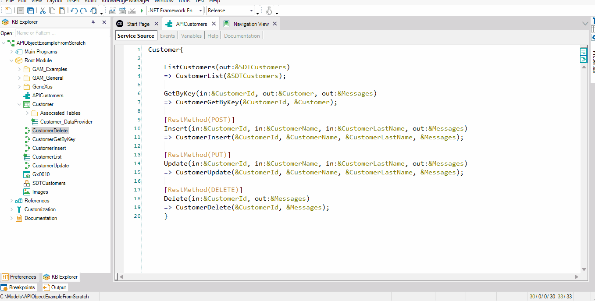

This article describes how the GAM module can allow you to set appropriate security for your REST API service.
First, in the main GeneXus Menu select: Tools > GeneXus Access Manager > Enable Integrated Security. A new window is opened. Click on the Yes button to enable GAM.
Next, go to your API object (for example, APICustomers, created in this article) and set a value for its Integrated Security Level property. In this example, you have a restricted API object, so it is not enough to authenticate the application. In addition, the user who tries to use the service must have the necessary permissions to be able to do so. Thus, set the Integrated Security Level property to Authorization, and modify the Permission Prefix property to easily identify the permission when assigning it to a user. In this example, the suffix "123" was added to the "APICustomers" permission name.
Select Rebuild All and accept to create GAM tables.
Execute the GAM web back end and configure a new user, giving it permissions over the "apicustomers123_Services_Execute" permission name.
Read these articles to learn how to create a Registration with GAM and to give GAM - Permissions.
Identify Client_Id from the application and copy its value in memory. It will be useful in the next steps.
Next, try to execute some method again using Postman or any other software tool.
Since security is now activated in the service, you will get this as a response:
{
"error":{
"code":"0",
"message": "This service needs an Authorization Header"
}
}
Follow the instructions on HowTo: Develop Secure REST Web Services in GeneXus to obtain the Access_token using the Client_Id of the application, the user and password of the registered user and the following header.
Content-Type
application/x-www-form-urlencoded
This token is the key to getting access to all services. All you need to do is set an Authorization header using the value returned by the Access_token.
Using the Authorization method, and managing permissions through the GAM backend, the new registered user will be able to execute all the services provided by the API object.
Below can see all the steps being run:

| Backlinks |
| Toc:First Steps with API Objects |